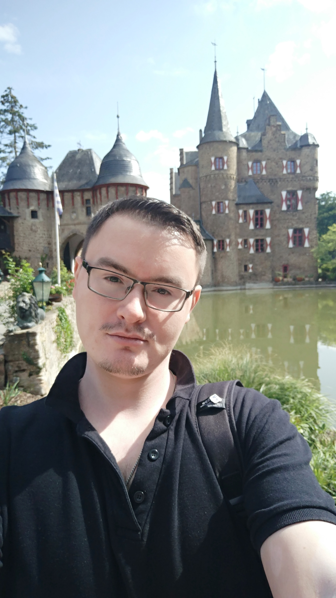

About Me
I want to say a few things...

BIO
Hi, I'm 27 years old. I am from Uzbekistan. Now I live in Bonn, Germany. I have a bachelor's degree from Moscow State University. And now I'm studying Master of Computer Science at the University of Bonn. Computer Technology is very exciting theme, and I like everything about it. Now I'm trying to improve my skills in developing websites, and I want to combine with my hobby for making photography. I'm not a professional in these areas, but it's a matter of time :).
ENTER Engineering Pte. Ltd.
Specialist in the development of accounting systems
- Analysis of the operational efficiency of the existing financial information infrastructure of the Company;
- Realization of analysis of modern software platforms and products for the possibility of their use for business tasks of DEF and the Company;
- Conducting testing and analysis of testing results of existing and new information systems;
- Development of user instructions, as well as methodological and regulatory materials related to the use of automated control systems of the Company;
- Preparation of functional requirements for software that is used or planned for use in the Company;